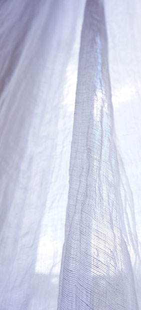
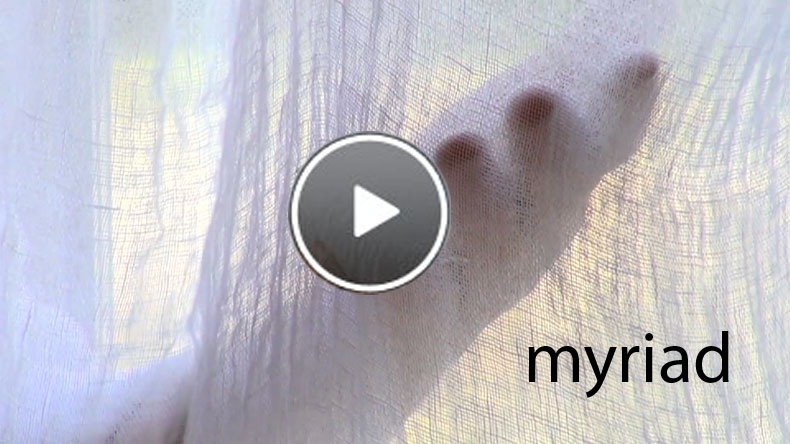

myriad linen


These sheer, almost weightless curtain panels are made from an off-white, open-weave pure 100% linen 66" wide – shrinks to 64" after washing. I like to allow one 64" panel per 36" of window or only a little less, to be on the generous side, as the fabric is so light and airy. I always recommend ring-clips not only to be able to draw the curtains easily, but length can be adjusted by folding the top over if necessary. My suggested drop is 96" but I can make any length. Email me.
Myriad curtain panels

Myriad curtain panels

Myriad